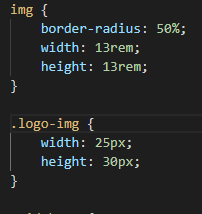

Como evitar redeploy em projetos Java? Conheça o JRebel
Será que e possível evitar o redeploy em projetos Java ao alterar ou adicionar um novo método em uma classe ou ao alterar um XML ou anotação ao seu framework preferido?
Já imaginou quanto tempo você economizaria se o redeploy nao fosse necessário ao adicionar um novo método em uma classe em uma classe ou ao alterar um XML ou anotação do seu framework preferido?
JRebel: a solução
Com JRebel isso e possivel.
Você pode trabalhar em projetos Java com muito mais
produtividade .
Download
Para fazer o download, acesse a pàgina do JRebel e faça o seu cadastro.
Gostou do artigo? Entre em contato.